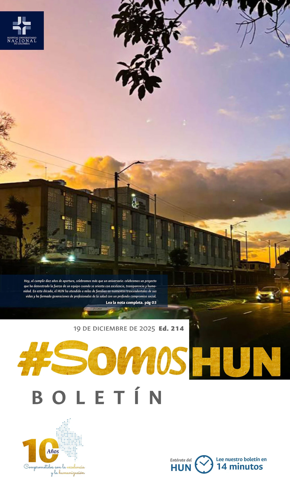
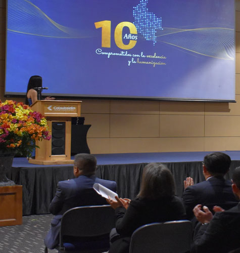
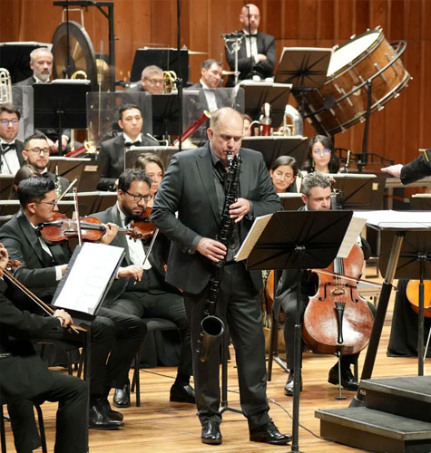
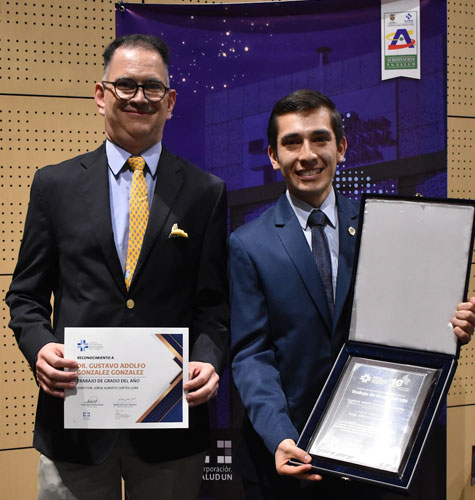
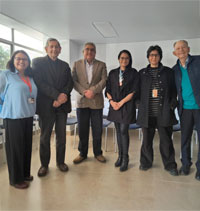
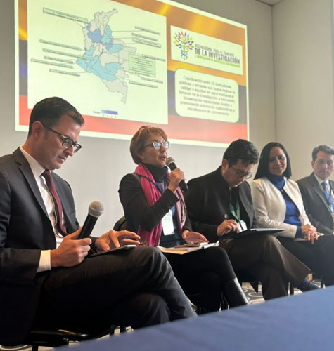
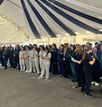
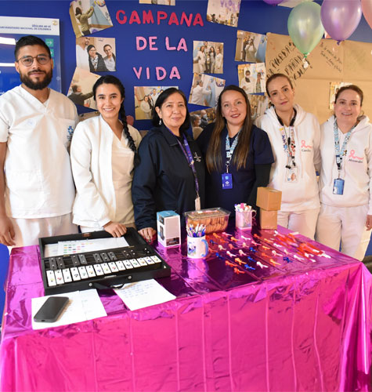

Ver todos los boletines
HUN, celebramos 10 años fortaleciendo la atención especializada y la formación en salud en Colombia
Hoy, al cumplir diez años de apertura, celebramos más que un aniversario: celebramos un proyecto que ha demostrado la fuerza de un equipo cuando se orienta con excelencia, transparencia y humanidad.En esta década, el HUN ha atendido a miles de familias en momentos trascendentales de sus vidas y ha formado generaciones de profesionales de la salud con un profundo compromiso social.
Leer más

Concierto de 10 años
El Hospital Universitario Nacional de Colombia (HUN) conmemoró su décimo aniversario con un concierto de la Orquesta Filarmónica de Bogotá. El evento se realizó en el Auditorio León de Greiff y congregó a 1600 asistentes para destacar los logros institucionales alcanzados durante esta primera década.Leer más

III noche de reconocimientos
El HUN celebró la III Ceremonia de ReconocimientosLeer más

La Asociación de Usuarios, la voz que acompaña
En los pasillos del Hospital Universitario Nacional de Colombia, donde cada día se cruzan pacientes que buscan respuestas, cuidadores que acompañan en silencio y equipos asistenciales que sostienen la vida con precisión y humanidad, existe un grupo decisivo que escucha, observa y pregunta. Es la Asociación de Usuarios del Hospital Universitario Nacional (ASOHUN), una red de voluntarios que, desde su propia experiencia como pacientes o cuidadores, se ha convertido en un puente indispensable entre la comunidad hospitalaria y la institución.Leer más

Nace la Red Nacional para el Fomento de la Investigación e Innovación en Hospitales Colombianos
Con la participación de 23 hospitales de todas las regiones del país y el acompañamiento de entidades rectoras del sistema de salud, Colombia dio un paso decisivo hacia la consolidación de un ecosistema hospitalario más colaborativo, innovador y orientado a resolver los desafíos reales en salud. La creación de la Red Nacional para el Fomento de la Investigación e Innovación en Hospitales Colombianos marca un hito en la articulación entre instituciones públicas, academia y organizaciones territoriales para fortalecer las capacidades nacionales en investigación, innovación y evidencia.Leer más

Novenas
En medio del ritmo constante del Hospital Universitario Nacional de Colombia, hubo momentos en los que el tiempo pareció bajar la velocidad. Fueron los días de las novenas, cuando las voces empezaron a encontrarse y la rutina dio paso a un espacio distinto, marcado por el recogimiento y la cercanía. Colaboradores se reunieron para compartir un instante que invitaba a hacer una pausa y a estar presentes.Leer más

Feria de humanización
La Feria de Humanización se vivió como un espacio abierto para toda la comunidad del hospital. Doctores, funcionarios, colaboradores, estudiantes, pacientes, cuidadores y visitantes participaron en una jornada pensada para compartir, conversar y reconocer que el cuidado también se construye desde la forma en que nos relacionamos cada día.Leer más